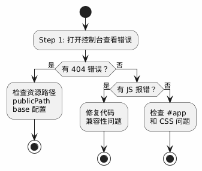
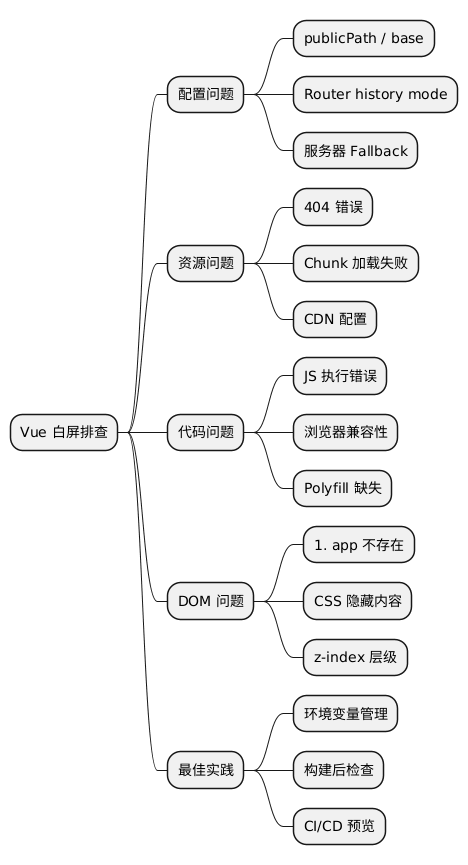

Vue.js 应用的"白屏死机"：原因排查与解决方案全攻略
Posted on Tue 03 February 2026 in Tech • 5 min read
| Abstract | Vue.js 应用的"白屏死机"：原因排查与解决方案全攻略 |
|---|---|
| Authors | Walter Fan |
| Category | learning note |
| Status | v1.0 |
| Updated | 2026-02-03 |
| License | CC-BY-NC-ND 4.0 |
Vue.js 应用的"白屏死机"：原因排查与解决方案全攻略
引子：一个让人崩溃的周五下午
下午四点，你信心满满地把 Vue 项目打包上线。npm run build，成功。把 dist 目录扔到服务器上，配置好 Nginx。打开浏览器，输入地址，回车——
一片空白。
你愣了三秒，刷新。还是白的。打开控制台，一堆红色 404。本地 npm run serve 跑得好好的啊！
这个场景，我经历过不下十次。每次都觉得是"灵异事件"，但其实背后的原因就那么几个。今天我把这些年踩过的坑整理出来，下次再遇到白屏，照着这份清单排查，五分钟内定位问题。
读完这篇文章，你能带走：
- Vue 白屏的 七大常见原因 及其原理
- 每种原因对应的 排查方法和解决方案
- 一份 部署前自检 Checklist
- 一些 防患于未然 的最佳实践
一、先别慌：快速定位问题方向
在开始逐个排查之前，先做两个简单测试：
1.1 打开浏览器控制台
按 F12 或 Cmd+Option+I，看 Console 和 Network 标签页：
| 现象 | 可能原因 |
|---|---|
| 控制台有红色 404 错误 | 资源路径配置错误 |
| 控制台有 JS 报错 | 代码兼容性问题或打包配置错误 |
| Network 显示 HTML 返回了 404 | 服务器路由配置问题 |
| 什么错都没有，就是白 | 可能是 #app 没挂载上，或 JS 执行顺序问题 |
1.2 查看页面源代码
右键 → 查看网页源代码。如果你看到的是：
<!DOCTYPE html>
<html>
<head>
<meta charset="utf-8">
<title>My App</title>
<script defer src="/js/chunk-vendors.xxxxx.js"></script>
<script defer src="/js/app.xxxxx.js"></script>
</head>
<body>
<div id="app"></div>
</body>
</html>
但 <div id="app"> 里面是空的——恭喜，问题出在 JavaScript 加载或执行 阶段。
二、七大元凶逐个击破
元凶 1：publicPath 配置错误（最常见！）
症状：控制台 404，资源路径是 /js/app.xxx.js，但实际应该是 /myapp/js/app.xxx.js。
原因：你的应用不是部署在域名根目录，而是子路径（比如 https://example.com/myapp/），但打包时 publicPath 还是默认的 /。
解决方案：
Vue CLI（vue.config.js）：
// vue.config.js
module.exports = {
publicPath: process.env.NODE_ENV === 'production'
? '/myapp/' // 你的子路径，注意前后都要有斜杠
: '/'
}
Vite（vite.config.js）：
// vite.config.js
import { defineConfig } from 'vite'
import vue from '@vitejs/plugin-vue'
export default defineConfig({
base: '/myapp/', // Vite 用 base 而不是 publicPath
plugins: [vue()]
})
踩坑提醒：
- 路径要以 / 开头和结尾：/myapp/ 而不是 myapp
- 如果部署在根目录，就用 / 或 ./
- ./ 表示相对路径，适合不确定部署位置的情况
元凶 2：Vue Router 的 History 模式 vs Hash 模式
症状：首页能打开，但刷新页面或直接访问子路由就 404。
原因：Vue Router 的 history 模式依赖服务器配置。当用户访问 /about 时，服务器会去找 /about/index.html，找不到就 404。
解决方案：
方案 A：改用 Hash 模式（简单粗暴）
// router/index.js
import { createRouter, createWebHashHistory } from 'vue-router'
const router = createRouter({
history: createWebHashHistory(), // 改成 Hash 模式
routes: [...]
})
URL 会变成 https://example.com/#/about，丑是丑了点，但省心。
方案 B：配置服务器 Fallback（推荐）
让服务器对所有路由都返回 index.html，由前端 Router 接管。
Nginx 配置：
server {
listen 80;
server_name example.com;
root /var/www/myapp;
index index.html;
location / {
try_files $uri $uri/ /index.html;
}
# 如果部署在子路径
location /myapp/ {
alias /var/www/myapp/;
try_files $uri $uri/ /myapp/index.html;
}
}
Apache 配置（.htaccess）：
<IfModule mod_rewrite.c>
RewriteEngine On
RewriteBase /
RewriteRule ^index\.html$ - [L]
RewriteCond %{REQUEST_FILENAME} !-f
RewriteCond %{REQUEST_FILENAME} !-d
RewriteRule . /index.html [L]
</IfModule>
Vercel（vercel.json）：
{
"rewrites": [
{ "source": "/(.*)", "destination": "/index.html" }
]
}
元凶 3：路由的 base 配置和 publicPath 不一致
症状：资源能加载，但路由跳转不对，或者跳转后白屏。
原因：vue.config.js 的 publicPath 和 router 的 base 配置不一致。
解决方案：保持一致！
// vue.config.js
module.exports = {
publicPath: '/myapp/'
}
// router/index.js
import { createRouter, createWebHistory } from 'vue-router'
const router = createRouter({
history: createWebHistory('/myapp/'), // 和 publicPath 保持一致
routes: [...]
})
Vite + Vue Router 4：
// vite.config.js
export default defineConfig({
base: '/myapp/'
})
// router/index.js
const router = createRouter({
history: createWebHistory(import.meta.env.BASE_URL), // 自动读取 base
routes: [...]
})
元凶 4：JavaScript 执行错误导致渲染中断
症状：控制台有红色 JS 报错，#app 里面是空的。
常见报错：
Uncaught TypeError: Cannot read properties of undefined (reading 'xxx')
Uncaught ReferenceError: xxx is not defined
原因： - 代码里用了某些 API，生产环境不支持 - 依赖的库版本不兼容 - 代码逻辑有 bug，但本地没测到
排查方法：
// main.js - 添加全局错误捕获
app.config.errorHandler = (err, vm, info) => {
console.error('Vue Error:', err)
console.error('Component:', vm)
console.error('Info:', info)
}
// 或者在 window 上捕获
window.onerror = function(message, source, lineno, colno, error) {
console.error('Global Error:', { message, source, lineno, colno, error })
}
解决方案：
- 检查浏览器兼容性：用 Can I Use 查你用的 API
- 添加 Polyfill：
npm install core-js
// main.js 顶部
import 'core-js/stable'
- 检查可选链操作符：确保构建工具支持
?.语法
// babel.config.js
module.exports = {
presets: [
['@vue/cli-plugin-babel/preset', {
useBuiltIns: 'usage',
corejs: 3
}]
]
}
元凶 5：异步组件加载失败
症状：首页能显示，但某些页面白屏，控制台有 chunk 加载失败的错误。
常见报错：
Loading chunk xxx failed.
ChunkLoadError: Loading chunk xxx failed.
原因： - CDN 或服务器没有返回正确的 chunk 文件 - 用户网络问题 - 发布新版本后，旧版本的 chunk 文件被删除
解决方案：
方案 A：添加加载失败重试
// router/index.js
const routes = [
{
path: '/about',
component: () => import(/* webpackChunkName: "about" */ '../views/About.vue')
.catch(() => {
// 加载失败时刷新页面
window.location.reload()
})
}
]
方案 B：使用更健壮的异步加载
// utils/lazyLoad.js
export function lazyLoadView(AsyncView) {
const AsyncHandler = () => ({
component: AsyncView,
loading: () => import('../components/Loading.vue'),
error: () => import('../components/Error.vue'),
delay: 200,
timeout: 10000
})
return Promise.resolve({
functional: true,
render(h, { data, children }) {
return h(AsyncHandler, data, children)
}
})
}
// router/index.js
import { lazyLoadView } from '@/utils/lazyLoad'
const routes = [
{
path: '/about',
component: () => lazyLoadView(import('../views/About.vue'))
}
]
方案 C：保留旧版本文件
部署时不要直接删除 dist 目录，而是：
# 保留旧文件，只覆盖新文件
rsync -av --delete-delay dist/ /var/www/myapp/
元凶 6：#app 元素不存在或被覆盖
症状：完全白屏，控制台可能有警告：[Vue warn]: Failed to mount app: mount target selector "#app" returned null
原因：
- index.html 里没有 <div id="app"></div>
- 某些脚本在 Vue 挂载前修改了 DOM
- Vue 脚本加载顺序有问题
排查方法：
<!-- 在 index.html 中添加调试 -->
<div id="app">
<p>如果你看到这行字，说明 Vue 没有成功挂载</p>
</div>
<script>
console.log('App element:', document.getElementById('app'))
</script>
解决方案：
<!-- public/index.html -->
<!DOCTYPE html>
<html lang="zh-CN">
<head>
<meta charset="utf-8">
<meta name="viewport" content="width=device-width,initial-scale=1.0">
<title><%= htmlWebpackPlugin.options.title %></title>
</head>
<body>
<noscript>
<strong>请启用 JavaScript 以使用此应用</strong>
</noscript>
<div id="app"></div>
<!-- built files will be auto injected -->
</body>
</html>
确保 Vue 脚本是 defer 加载的：
// vue.config.js
module.exports = {
chainWebpack: config => {
config.plugin('html').tap(args => {
args[0].inject = 'body' // 脚本注入到 body 末尾
return args
})
}
}
元凶 7：CSS 导致内容不可见
症状：控制台没报错，#app 里有内容，但就是看不见。
原因：
- 全局 CSS 把内容设成了 display: none 或 visibility: hidden
- overflow: hidden 配合错误的高度
- 白色文字在白色背景上
- z-index 层级问题
排查方法：
// 在控制台执行
document.getElementById('app').style.cssText = 'background: red !important; min-height: 100vh;'
如果出现红色背景，说明 #app 是存在的，问题在 CSS。
解决方案：
/* 添加基础样式确保可见 */
#app {
min-height: 100vh;
background-color: #fff; /* 或你的主题色 */
}
/* 检查是否有这种坑爹的全局样式 */
* {
/* 不要这样写！ */
/* display: none; */
}
三、实战：一个完整的排查流程
假设你现在面对一个白屏的 Vue 应用，按这个流程走：
@startuml
skinparam backgroundColor #FEFEFE
skinparam shadowing false
skinparam ActivityDiamondFontSize 12
skinparam ActivityFontSize 12
start
:Step 1: 打开控制台查看错误;
if (有 404 错误？) then (是)
:检查资源路径
publicPath
base 配置;
stop
else (否)
if (有 JS 报错？) then (是)
:修复代码
兼容性问题;
stop
else (否)
:检查 #app
和 CSS 问题;
stop
endif
endif
@enduml

排查脚本
把这段代码粘贴到控制台，快速诊断：
(function diagnoseVueApp() {
const results = [];
// 检查 #app 元素
const appEl = document.getElementById('app');
if (!appEl) {
results.push('❌ #app 元素不存在');
} else {
results.push('✅ #app 元素存在');
if (appEl.innerHTML.trim() === '') {
results.push('⚠️ #app 内容为空，Vue 可能没有挂载成功');
} else {
results.push('✅ #app 有内容');
}
}
// 检查 Vue 实例
if (appEl && appEl.__vue_app__) {
results.push('✅ Vue 3 实例已挂载');
} else if (appEl && appEl.__vue__) {
results.push('✅ Vue 2 实例已挂载');
} else {
results.push('⚠️ 未检测到 Vue 实例');
}
// 检查控制台错误
results.push('\n📋 请检查 Console 标签页是否有红色错误');
results.push('📋 请检查 Network 标签页是否有 404 请求');
console.log(results.join('\n'));
})();
四、部署前自检 Checklist
每次部署前过一遍这个清单：
## Vue 应用部署自检清单
### 配置检查
- [ ] `publicPath` / `base` 配置正确（和部署路径一致）
- [ ] Router 的 `base` 配置和 `publicPath` 一致
- [ ] Router 模式选择：Hash 模式还是 History 模式？
- [ ] 如果用 History 模式，服务器 Fallback 配置好了吗？
### 构建检查
- [ ] `npm run build` 没有报错
- [ ] `dist` 目录结构正确（有 index.html, js/, css/ 等）
- [ ] 检查 `dist/index.html` 里的资源路径是否正确
### 本地验证
- [ ] 用静态服务器预览 dist 目录：
`npx serve -s dist`
或 `python -m http.server 8080 --directory dist`
- [ ] 本地预览时所有页面都能正常访问
- [ ] 路由刷新不会 404
### 服务器检查
- [ ] 文件已正确上传到服务器
- [ ] 文件权限正确（一般 644 或 755）
- [ ] Nginx/Apache 配置已更新并 reload
- [ ] HTTPS 证书正常（如果用 HTTPS）
### 上线后验证
- [ ] 首页能正常显示
- [ ] 各个路由都能访问
- [ ] 刷新页面不会白屏
- [ ] 控制台没有错误
- [ ] 移动端也能正常访问
五、防患于未然：最佳实践
5.1 使用环境变量管理配置
// vue.config.js
module.exports = {
publicPath: process.env.VUE_APP_PUBLIC_PATH || '/'
}
// .env.production
VUE_APP_PUBLIC_PATH=/myapp/
5.2 添加构建后自动检查
// package.json
{
"scripts": {
"build": "vue-cli-service build",
"postbuild": "node scripts/check-build.js"
}
}
// scripts/check-build.js
const fs = require('fs')
const path = require('path')
const distPath = path.join(__dirname, '../dist')
const indexPath = path.join(distPath, 'index.html')
// 检查 dist 目录
if (!fs.existsSync(distPath)) {
console.error('❌ dist 目录不存在')
process.exit(1)
}
// 检查 index.html
if (!fs.existsSync(indexPath)) {
console.error('❌ index.html 不存在')
process.exit(1)
}
// 检查资源路径
const html = fs.readFileSync(indexPath, 'utf-8')
const publicPath = process.env.VUE_APP_PUBLIC_PATH || '/'
if (!html.includes(`src="${publicPath}js/`)) {
console.warn(`⚠️ 资源路径可能不正确，期望: ${publicPath}`)
}
console.log('✅ 构建检查通过')
5.3 CI/CD 中添加预览环节
# .github/workflows/deploy.yml
jobs:
build:
runs-on: ubuntu-latest
steps:
- uses: actions/checkout@v3
- name: Build
run: npm run build
- name: Preview Test
run: |
npm install -g serve
serve -s dist -l 3000 &
sleep 5
curl -f http://localhost:3000 || exit 1
echo "✅ Preview test passed"
六、总结
Vue 应用白屏问题虽然恼人，但原因无非就那么几个：
- publicPath 配置错误 — 最常见，第一个检查
- Router History 模式没配服务器 Fallback — 刷新 404 的元凶
- Router base 和 publicPath 不一致 — 路由跳转异常
- JS 执行错误 — 看控制台报错
- 异步组件加载失败 — Chunk 404
- #app 元素问题 — 挂载点丢失
- CSS 问题 — 内容被隐藏
记住这个口诀：先看控制台，再查资源路径，最后排查代码。
@startmindmap
* Vue 白屏排查
** 配置问题
*** publicPath / base
*** Router history mode
*** 服务器 Fallback
** 资源问题
*** 404 错误
*** Chunk 加载失败
*** CDN 配置
** 代码问题
*** JS 执行错误
*** 浏览器兼容性
*** Polyfill 缺失
** DOM 问题
*** #app 不存在
*** CSS 隐藏内容
*** z-index 层级
** 最佳实践
*** 环境变量管理
*** 构建后检查
*** CI/CD 预览
@endmindmap

参考资料
下次再遇到白屏，别慌。打开这篇文章，五分钟搞定。
本作品采用知识共享署名-非商业性使用-禁止演绎 4.0 国际许可协议进行许可。